1概览与游戏概念
Baba Is You: The Board Game 是一款双人正面对决的解谜对战——规则就在棋盘上，由你拼出。
每一局游戏由两个或更多关卡（Level）组合构成一个场景（Scenario）。关卡按"世界（World）"分组——我们建议你在同一局内打完一个完整的五场场景世界，但你也可以随时暂停。
游戏开始时，左侧玩家控制 BABA（棋盘上写着 "Baba is YOU"，箭头指向该玩家），右侧玩家控制 KEKE。要赢，你必须把一个是 YOU的东西移到一个是 WIN的东西上面（或反过来）。但游戏开始时，棋盘上没有任何东西是 WIN——你必须用行动来"造出"一个 WIN，再在对手之前抢先到达。
如果你没玩过电子版，建议先去玩一下；当然也可以跳过本节直接开局。本桌游版相对电子版做了以下调整：
- 属性方块（如 IS YOU、IS WIN）已包含动词 "is"。
- 所有东西始终处于 PUSH 状态。
- 与 YOU 相邻的任意东西都可以选择性地被你 PULL。
- 每个回合只有一个"是 YOU"的东西可以移动。
- "同时是 YOU 和 WIN" 不会自动获胜。
- 名词之间不会互相覆盖（如 ROCK 不会变成 FLAG）。
1.1 图例
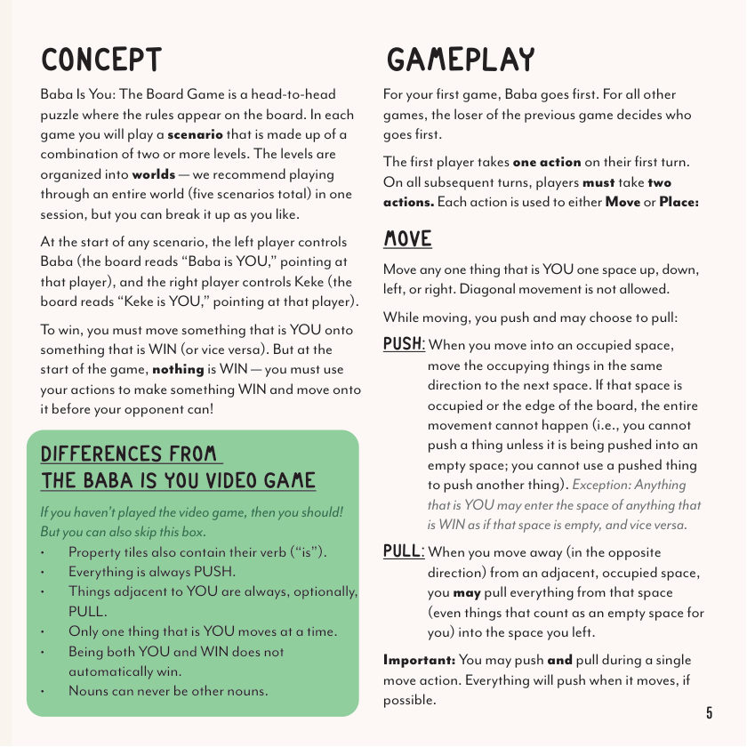
2游戏组件
棋盘采用 5×5 网格。每局游戏会用到以下部分组件，其余组件会随关卡卡逐渐引入。
2.1 主要组件清单
包含 BABA、KEKE、FLAG、ROCK 等所有"实体"词汇。
包含 IS YOU、IS WIN、IS PUSH、IS PULL、IS FAST 等行为定义。
包含 AND、OR 等连接规则子句。
每个关卡配一张关卡卡 + 对应关卡方块（绘制在关卡卡上）。
每个世界一个信封，内含该世界的关卡卡。为避免剧透，不要打开看里面。
独立小册子，按关卡讲解规则。为避免剧透，只打开当前用的关卡页。
开始放在棋盘两角。
开始放在棋盘正中。
每位玩家一个，用于"打三局两胜"。
用于标记"挑战"流程的剩余步数。
获得一个场景胜利得 1 分。
打完一个世界后归属最多场景点的玩家。
模型与替代方块二选一使用，功能相同。
同上。
5×5 网格。
首次使用某关卡之前，不要从冲压板上把对应方块取下来，也不要看冲压板另一面；只在第一次玩到该关卡时再取出。
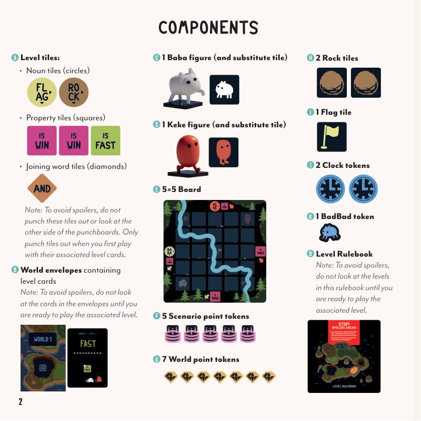
3第一次玩
第一次玩之前，请完成以下准备工作：
- 打开 WORLD 1 信封，取出名为 DEFAULT 和 WORLD 1: LEVEL 1 的两张关卡卡。
- 同步翻到关卡规则书的前两页（这两个关卡的说明就在那里）。
- 这就是你的第一局场景所要用到的全部关卡。强烈建议新手用此场景开局；未到对应关卡之前不要看其他关卡卡。
- 第一次玩过的话，从两张黑色冲压板上把所有方块都取下。无需看冲压板正面，从蓝色冲压板上把标有 WORLD 1 LEVEL 1 的方块取下，然后把蓝板放回盒中（剩下的方块等你玩到对应关卡再取）。
动手之前先看一段官方教学视频能极大降低上手成本。
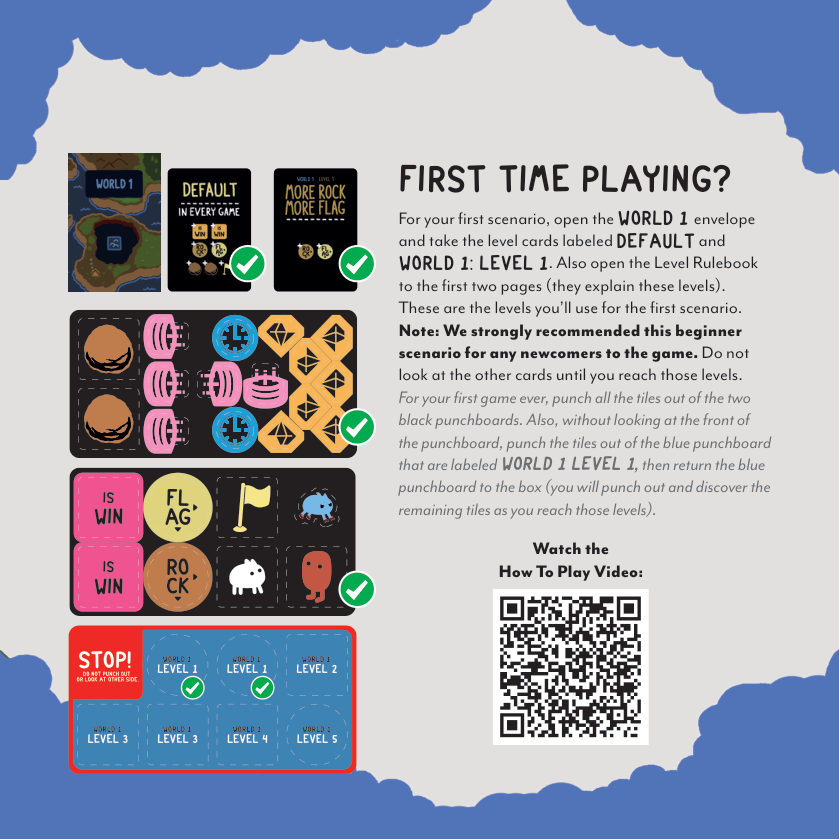
4游戏准备
- 将棋盘放在桌面中央。BABA 模型放左下角，KEKE 模型放右上角；其余两角各放一块石头。方块"中央格"放旗子方块。
- 两位玩家并肩而坐，棋盘在中间，每对箭头（"Is You"）指向一位玩家。每位玩家拿一个时钟标记。
- 把本场景的关卡卡和关卡方块（关卡卡上画有对应方块）摆在棋盘旁边。具体关卡规则见关卡规则书。
- 其余标记（场景点、世界点、BadBad 标记、BABA / KEKE 替代方块）放在盒子的中央置物区，不要紧贴棋盘——这些不能被"放置"上棋盘。
- 如不喜模型，可全程用 BABA / KEKE 替代方块代替。
- DEFAULT 关卡永远参与，无论你打哪个场景：它带来两块 "IS WIN" 属性方块、1 块 ROCK 名词方块、1 块 FLAG 名词方块。
- 其他关卡卡通常会再加方块（如 WORLD 1: LEVEL 1 额外加 1 块 ROCK 和 1 块 FLAG）。
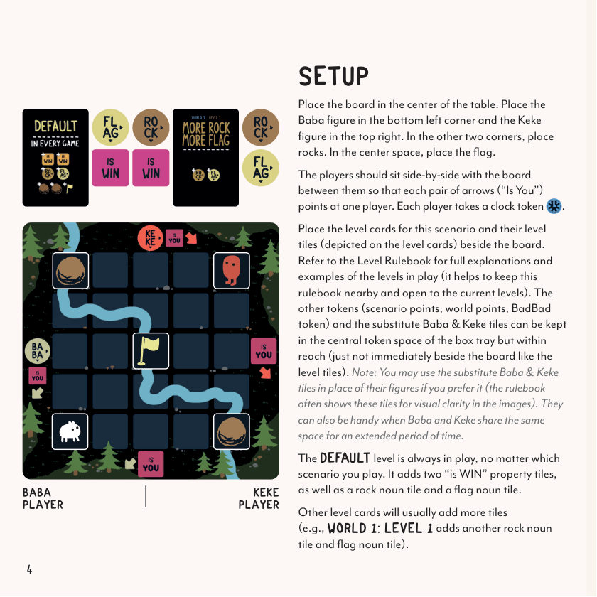
5游戏玩法
第一局由 BABA 玩家先手。之后的每局由上一局输家决定谁先手。
先手玩家在自己首回合执行 1 个行动。从第二回合起，每位玩家在自己的每个回合执行 2 个行动。每个行动从下列两种中选一个：
5.1 移动（MOVE）
将任何一个是 YOU 的东西向上、下、左或右移动一格。不可斜向移动。移动过程中会触发PUSH，并可选择性地触发PULL：
- PUSH（推）：当你移入一个被占据的格子时，把占据该格的所有东西沿同一方向推到下一格。如果下一格已被占据或到了棋盘边缘，整个移动不合法（你不能推一个东西到非空格；不能用被推的东西继续推下一个）。例外：任何是 YOU 的东西可以像空格一样进入任何是 WIN 的东西所在格（反之亦然）。
- PULL（拉）：当你向某方向移出（与该方向相反）时，可把与你相邻的、被占据的那一格里的所有东西（包括对你来说算空格的东西）一起拉到你离开的格子里。
你可以在同一次移动中同时推与拉。任何能推的东西，在它能移动的时候都会被推。
5.2 放置（PLACE）
从棋盘旁边拿一个东西（名词方块、属性方块或物体，如石头、旗子等）放到与你任一 是 YOU 的东西相邻（不含斜向）的空格里。
这就是为什么不在棋盘旁摆那些没在用的关卡方块 / 场景点 / 世界点 / BadBad 标记 / BABA / KEKE 替代方块——这些东西永远不能被放置上棋盘。只有当前在用的关卡卡的方块，或原本在棋盘上、后来被销毁的东西，才能放置。一个东西一旦被放到棋盘上，除非先被销毁，否则不能再次放置。
注：放置到棋盘上的东西视为"进入"该格。
有字的方块放置方向必须与棋盘上的文字对齐：名词方块要有一支箭头指向右、一支指向下。
你回合结束时棋盘必须与回合开始时不同，且不能正好变回对手回合开始时的样子——你不能拿行动"啥都不做"或"完全撤销对手的回合"。
建议全程不悔棋（除非发现刚才那一步本来就是非法的）！游戏鼓励"先动手再说"，意外和搞笑场面都是这款桌游的乐趣所在。
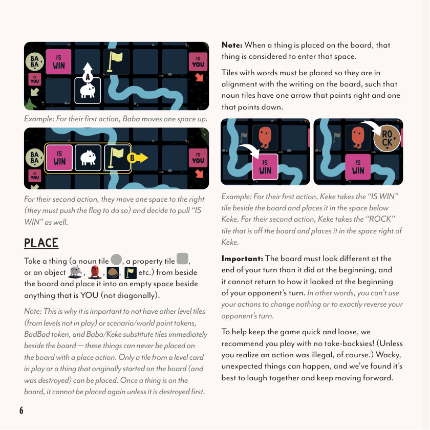
6形成规则
当一个名词方块上的箭头 → 指向相邻的属性方块（如 FLAG IS WIN）时，它们构成一条规则（Rule）。只要该规则存在，所有被该名词方块描述的物体就获得这条属性。
ROCK IS WIN，你把任何"是 YOU"的东西移到任意一块石头上，就赢了！6.1 一条规则不成立的几种情况
6.2 与板印规则的交互
ROCK IS YOU。于是 KEKE 玩家（坐在右边的人）现在有三样东西可以移动和放置：KEKE，以及任意一块石头。6.3 多重规则
一个名词方块可以同时指向两个属性方块；一个属性方块可以同时被两个名词方块指向。
KEKE IS YOU（右玩家）和 KEKE IS FAST。图二展示了三条规则：ROCK IS WIN、FLAG IS WIN 和 FLAG IS YOU（右玩家）。6.4 规则的撤销
如果一个方块被移动或移走，使它不再构成 NOUN PROPERTY 规则，则该名词方块所描述的物体也就不再拥有该属性。
BABA IS WIN 已经被撤销。6.5 同时触发
如果多个交互会同时触发，按"尽可能同时"的原则结算。如果实在无法同时结算，由最近一个行动的玩家选择顺序。
有些关卡自带永远无法撤销的永久规则——它们在关卡卡上以"被墙围起"的样式呈现。只要该关卡卡在用，它的永久规则就生效。
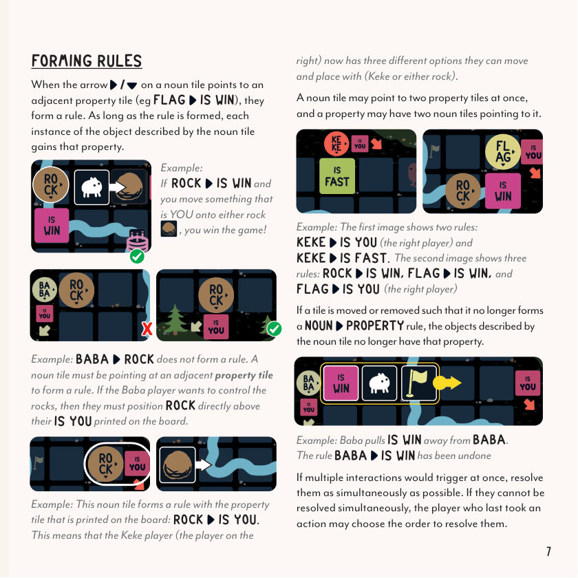
7胜利条件与提示
7.1 胜利条件
当一个"是 YOU"的东西进入一个"是 WIN"的东西所在格（或反过来），把它当作空格处理（把两个东西叠放）。
如果一个"是 YOU"的东西和任何一个"是 WIN"的东西共占一格，你就赢了。
如果双方都和"是 WIN"的东西共占一格，由最近一个行动的玩家获胜。
如果一个东西同时是 YOU 又是 WIN，并不会自动获胜。还需要另一个"是 YOU"的东西和它共占一格。
BABA IS YOU, ROCK IS YOU, ROCK IS WIN，并不会自动获胜。必须让 BABA 和某块石头共占一格，或让两块石头共占一格，才算赢。7.2 提示与策略
- 控制多个东西（
FLAG IS YOU）通常比只控制一个更占优势。 - 给"是 YOU"的东西加上强力属性（如
BABA IS FAST）也是优势。 - 拆解对手已建好的规则也很有效——比如当对手更靠近石头时，把他搭好的
ROCK IS WIN推散或拉散。
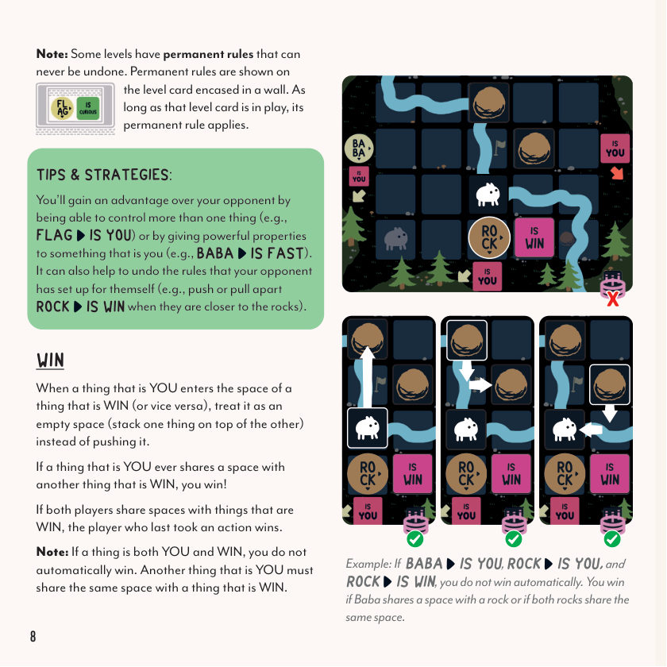
8挑战与终局
8.1 挑战（CHALLENGE）
如果一方认为当前局面已无解，可以跳过本回合（一个行动都不执行）来挑战对手。对手随后获得 5 个不间断的回合（共 10 个行动），试图获胜。如果他能，你输；如果他不能，挑战方获胜。
挑战方把 BadBad 标记放在自己棋盘上印的 BABA 或 KEKE 名词圆圈上。对手每执行一个行动（MOVE 或 PLACE），就沿顺时针把标记挪到下一棵树上——一共 10 棵树正好对应 10 个行动。
8.2 终局（GAME END）
游戏以三种方式之一结束：
- 当一个"是 YOU"的东西和一个"是 WIN"的东西共占一格。
- 当挑战被对手兑现或被对手拒兑现。
- 当一方在自己回合内凑不出 2 个行动（对方胜）。
注：即使自己凑不出行动，仍可以选择挑战对手，希望对手在自己回合内也凑不出 2 个行动。
8.3 场景胜利与世界点
每个场景默认只打一局，除非有玩家决定消耗自己的时钟标记把该场景升级为"三局两胜"——每位玩家在一个世界里只能用一次。
场景胜者（无论一局还是三局两胜）获得 1 个场景点。
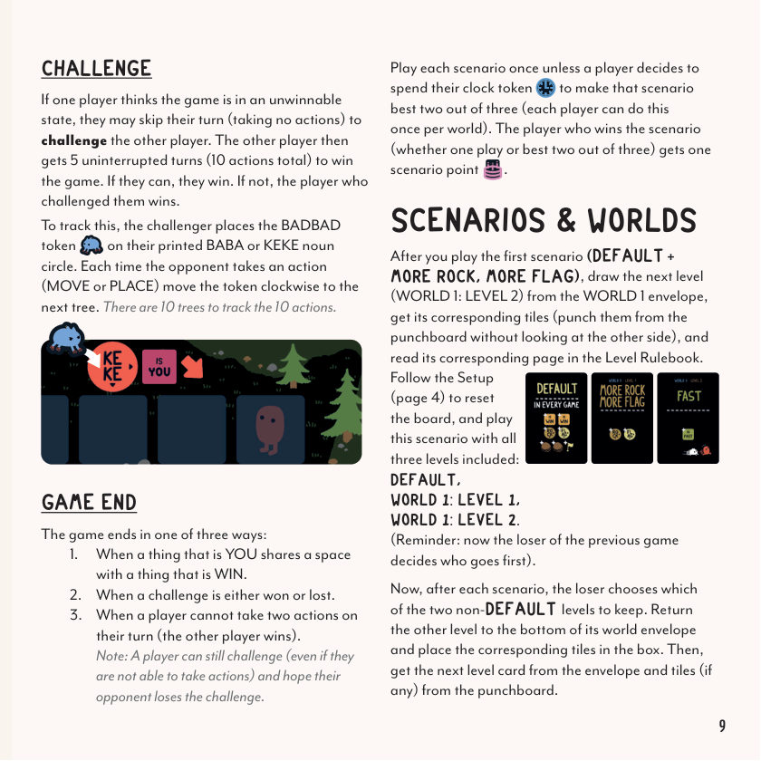
9场景与世界
打完第一局场景（DEFAULT + MORE ROCK, MORE FLAG）后，从 WORLD 1 信封里抽出下一关（WORLD 1: LEVEL 2），从冲压板上取出对应方块（不用看另一面），翻到关卡规则书的对应页。
按准备（第 4 节）重置棋盘，把这一关卡与 DEFAULT + WORLD 1: LEVEL 1 一起加入，本场景使用全部三张关卡卡。
（提示：现在由上一局的输家决定谁先手。）
每打完一个场景，输家从两个非 DEFAULT 关卡里选一个留下，另一个（连同对应方块）放回信封底部。然后从信封里抽出新关卡卡，准备下一场景。
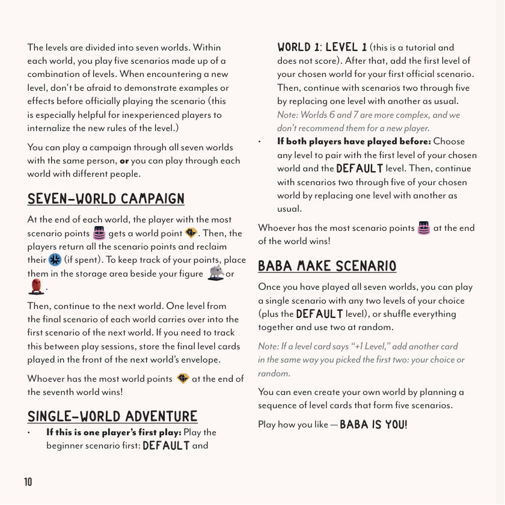
10战役模式
10.1 七世界战役（SEVEN-WORLD CAMPAIGN）
关卡被划分为 7 个世界，每个世界里打 5 个场景（每个场景由若干关卡组合而成）。遇到新关卡时，不要怕先演示它的例子——这对新人内化新规则尤其有用。
你可以和同一个人打完所有 7 个世界，也可以每个世界和不同人玩。
每个世界结束时，场景点最多的玩家获得 1 个世界点。然后双方把所有场景点放回供应区，若有消耗的时钟标记也可领回。把场景点 / 世界点放在自己模型旁的置物区。
每个世界的最后一局的关卡会带入下一世界的第一局。跨会话时请把上一局关卡卡放在下一世界信封的最前面。
打完第七世界后，世界点最多的玩家获胜。
10.2 单世界冒险（SINGLE-WORLD ADVENTURE）
- 如果某一方是首次玩：先打新手教学场景（DEFAULT + WORLD 1: LEVEL 1，不计分）。然后加你所选世界的第一关卡开始第一局正式场景。2~5 场景按常规替换关卡。
- 如果双方都玩过：任选一个关卡与所选世界第一关、DEFAULT 关卡组合开局，然后按常规替换关卡打 2~5 场景。
打完该世界后，场景点最多的玩家获胜该世界。
10.3 自创场景（BABA MAKE SCENARIO）
打完所有 7 个世界后，你可以自由挑两个关卡（再加 DEFAULT）打一个独立场景，或者把全部关卡卡洗混后随机抽两个关卡。
注：如果关卡卡写 "+1 Level"，按同样方式再加一张关卡卡（自选或随机）。
你也可以自创一个世界：选 5 个关卡卡排成 5 个场景，然后开打！怎么玩都行——BABA IS YOU！
WORLD 6 和 WORLD 7 比较复杂，不建议新玩家一上来就挑战。
11词汇表（GLOSSARY）
| 术语 | 说明 |
|---|---|
| BABA | 白色四脚角色。 |
| KEKE | 橙色双脚角色。 |
| FLAG | 旗子方块，初始放在棋盘中央。 |
| ROCK | 两块石头方块，初始放在棋盘两角。 |
| 相邻（ADJACENT） | 在四个正方向（左 / 右 / 上 / 下）之一相邻。不含斜向（除非另作说明）。 |
| 销毁（DESTROY） | 当某物被销毁，把它移到棋盘旁边。它稍后可用 PLACE 行动重新放回。 |
| 进入（ENTER） | 任何被放入或移入（即使其移动还会继续）的东西都视为进入该格。 |
| 最终行动 vs 回合结束 | 先结算你的最终行动及其效果，再结算任何"回合结束"效果。这是两步，不是同时。 |
| PUSH（推） | 当你移入一个被占据的格时，把占据该格的所有东西沿同一方向推到下一格。若下一格已被占据或到了棋盘边缘，整个移动不合法。是 YOU 的东西永远不能推对你而言算空格的东西——你们共享该格。 |
| PULL（拉） | 当你向某方向移出时，把与该方向相反方向的相邻格里的所有东西（包括对你而言算空格的东西）一起拉到你刚离开的格子里。 |
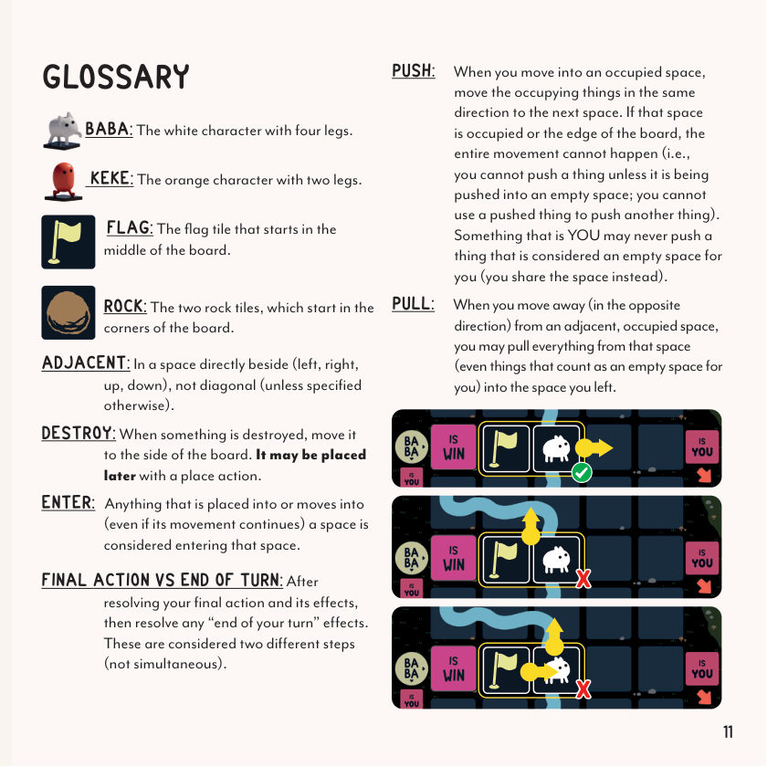
制作人员
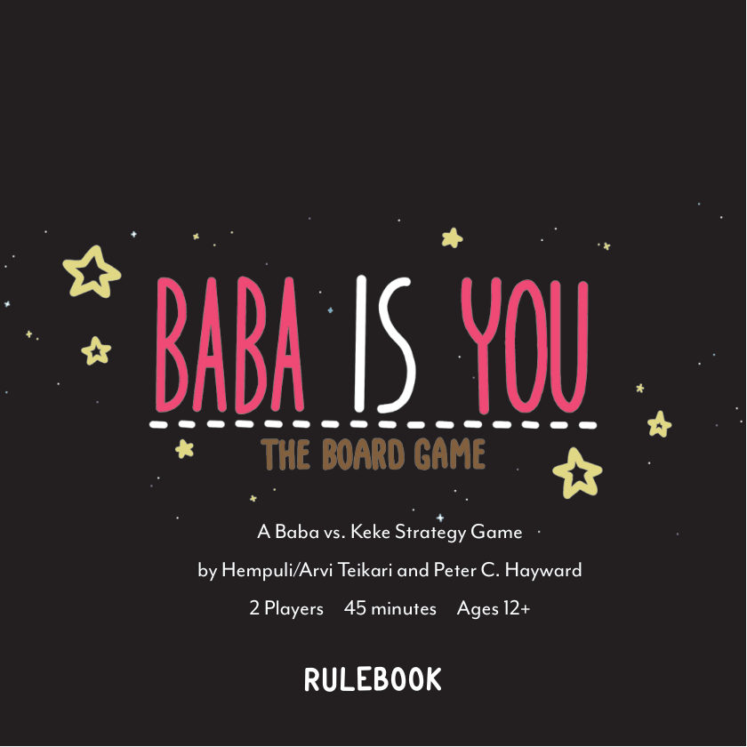
游戏设计：Hempuli & Peter C. Hayward
美术：Hempuli
平面设计：Anca Gavril
编辑：Scott Darrington
出版：Nick Murray & Kyle Spackman
特别致谢：Taylor Castaneda, Rocco Privitera, Alyssa Totaro, Haleigh Mooney，以及所有测试玩家！
© Hempuli, 2027. All rights reserved.
© Peter C. Hayward, 2027. All rights reserved.
© Bitewing Games, 2027. All rights reserved.
订阅更新：bitewinggames.com/subscribe
客服支持：help.allplay.com
基于电子游戏 Baba Is You，详情见：hempuli.com/baba
- 查看当前场景所用关卡的关卡规则书；
- 查看本规则书的词汇表（上节）；
- 查看本规则书的规则正文（上节）。
若仍有疑问，请访问官方 FAQ 论坛。
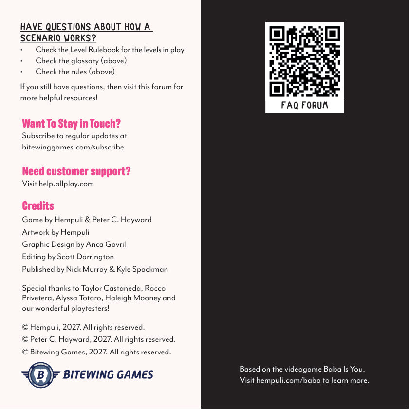